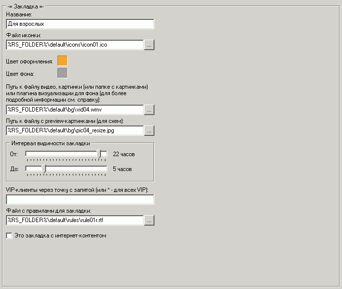

Наиболее важные опции:
Файл иконки
Можно указать .ico файл для иконки закладки
Рекомендуется использовать относительные пути с использованием переменных окружения %переменная%
Однако можно и абсолютные вида C:\folder\..., при этом "C:" в данном примере предполагает диск на клиентской машине, а не серверной!
Использование сетевых путей вида \\server\data... может замедлить работу клиентской машины.
Цвет фона
Используется только если нет или не удалось загрузить фоновую картинку/видео/плагин визуализации
Путь к файлу видео, картинки или плагину визуализации
В качестве фона для ярлыков окна закладки можно установить:
1) Фиксированный цвет фона.
В этом случае просто оставьте эту строку пустой и не указывайте никакой файл. Это рекомендуется для очень слабых машин или терминальных сессий.
2) Фиксированная картинка.
Укажите путь к файлу картинки JPG/BMP/PNG/TIFF/GIF.
3) Галерея картинок.
Укажите путь к папке с картинками. Каждый раз при загрузке закладки будет выбираться случайная картинка из этой папки.
4) Видео-ролик.
Укажите путь к видео-файлу AVI/WMV/MPEG/ASF (не рекомендуется использовать сетевые пути).
Важно! Кодеки DivX могут не работать корректно в шелле, потому рекомендуется их удалить и установить K-Lite Codecs Pack или XP/Vista Codecs Pack.
Важно! Для проигрывания видео должен быть установлен DirectX версии 7 или выше.
Важно! Проигрывание видео не занимает процессорного времени когда окно закладки скрыто или перекрыто другими окнами.
В папке клиентского шелла \Default\bg\ находятся лицензированные образцы видео и картинок.
Информация о лицензии находится в той же папке в файле license.txt
Загрузить другое видео можно с множества сайтов, посвященных Windows DreamScene.
5) Плагин визуализации.
Можно создавать совершенно любые видео-эффекты или анимации при использовании данной опции.
Образец плагина находится в папке клиентского шелла \Default\bg\vplugins\ вместе с исходным кодом.
Если не удалось загрузить файл типа 2), 3), 4), 5), то будет использоваться фиксированный цвет фона.
Рекомендуется использовать относительные пути с использованием переменных окружения %переменная%
Однако можно и абсолютные вида C:\folder\..., при этом "C:" в данном примере предполагает диск на клиентской машине, а не серверной!
Использование сетевых путей вида \\server\data... может замедлить работу клиентской машины.
Preview-картинки
Для экономии памяти и увеличения скорости загрузки схемы рекомендуется для каждой фоновой картинки (или видео) указывать ее уменьшенный вариант (только если используете схемы рабочего стола с отображением картинок).
Если не указать, то использоваться не будут.
Интервал видимости закладки
Можно указать интервал, когда закладка будет доступна (например, для закладок с содержимым "взрослого" характера)
VIP-клиенты
Если указать "*", то закладка будет видна только при активной VIP-сессии (любого пользователя), если через точку с запятой перечислить пользователей, то будет видна только в их VIP-сеансах.
Файл с правилами для закладки
Можно указать файл HTML или RTF для отображения правил, с которыми пользователь должен согласиться перед просмотром и запуском содержимого закладки.
Рекомендуется использовать относительные пути с использованием переменных окружения %переменная%
Закладка с интернет-контентом
Установите если желаете использовать опцию блокировки окон браузера при скрытии закладок интернета и если на данной закладке имеются интернет-программы.